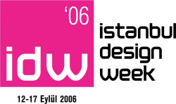

|
12
-17 Eylül 2006 > TATEF'06 11. Uluslararasý Metal Ýþleme
ve Teknolojileri Fuarý
Yer: CNR EXPO Fuar Merkezi / Ýstanbul
www.itf-tatef.com
Ziyaret
Saatleri:
- 12-16
Eylül > 10:00 - 19:00
- 17
Eylül Pazar > 10:00 - 18:00
Ücretsiz online davetiye için aþaðýdaki linki týklayýnýz;
www.tatef.com/tr/online.asp
Metal
iþleme sektörünün bir araya geldiði bu Fuar'da CNC takým tezgahlarý,
CAD/CAM sistemleri, sac iþleme makineleri, presler, yüzey
iþlem teknolojileri, kesici ve tutucu takýmlar, kaynak makineleri
- robotlarý ve fabrika otomasyon ürünleri sergileniyor...
* TATEF'06 Fuarý süresince standlarýndan broþürlerimizi daðýtarak
TurkCADCAM.net Portalý'nýn tanýtýmýna yardýmcý olan firmalar.
"Yýlýn Baþarýlý Kalýplarý" yarýþmasý ödül töreni:
Saðlam
Metal tarafýndan organize edilen ve Türkiye'de ilk kez
gerçekleþtirilen "Yýlýn Baþarýlý Kalýplarý" yarýþmasý
9 Eylül 2006 tarihinde danýþma ve seçim kurulunun gerçekleþtirdiði
toplantýda yýlýn baþarýlý kalýbýnýn seçilmesi ile sonuçlanmýþtýr.
Seçilen kalýplara ve sahiplerine ödülleri gerçekleþecek kokteyl
sonrasý verilecektir.
Tarih: 16 Eylül 2006, Cumartesi
Yer: CNR TATEF Fuar Alaný, 8. Hall, Saðlam Metal Standý
Saat: 14:00 Kokteyl
15:00 Ödül Töreni
LCV: Nehir Çetiner AKMAZ / (532) 616 26 28
Yarýþma
hakkýnda daha fazla bilgi için;
12
- 17 Eylül 2006 > idw 06 (istanbul design week):
Yer: Eski Galata Köprüsü / Ýstanbul
Açýlýþ: 12 Eylül Salý > 19:00
Fuar
ziyareti: 13 Eylül Çarþamba - 17 Eylül Pazar > 10:00-19:00
Geçtiðimiz
yýl birincisi yapýlan ve 50 bin kiþinin ziyaret ettiði Istanbul
Design Week- IDW 06 (Ýstanbul Tasarým Haftasý 2006), bu yýl
Ýstanbul Büyükþehir Belediyesi, Hürriyet Gazetesi ve dDf iþbirliðiyle
düzenleniyor. Dünyanýn dört bir yanýndan tasarýmcýlarý Ýstanbul'a
getiren, sergiler ve atölyeler sunan IDW, amatör profesyonel
herkese yönelik bir cazibe fuarý.
Köprü
giriþindeki parklarý da kapsayarak 12 bin metrekare alana
yayýlan IDW'de, 4 yabancý sergi yer alacak. Bunlar; Ýngiltere'den
ünlü tasarým grubu Designer's Block'un Ýstanbul'a özel sergisi,
Ýtalya'dan OPOS tasarým grubunun Made For China sergisi, 2020'de
mutfaklarýn nasýl olacaðýný sorgulayan Electrolux Design Lab
yarýþmasýnýn sonuçlarýnýn yer aldýðý sergi ve Global Local
Helsinki adýný alan Çaðdaþ Finlandiya Tasarýmý Sergisi.
Readymade
Atölyesi, tasarým yapmaya meraklý olanlar için bir ürünü baþka
bir ürüne dönüþtürme deneyimi yaþatacak ilginç bir fýrsat.
Alberto
Meda (Ýtalya), Shin Azumi (Japonya) ve Matali Crasset (Fransa)
gibi pek çok tasarým yýldýzý, beþ gün boyunca tasarýma dair
bilgi ve deneyimlerini Türk meslektaþlarý, tasarýmcý adaylarý
ve tasarým meraklýlarý ile paylaþacak.
Japon
Uzay Havacýlýk Dairesi Jaxa'da, Uzay-Fizik Departmaný ekip
baþkanlýðý yapan Türk Mimar Serkan Anýlýr uluslararasý
davetli tasarýmcýlardan. Diðer Türk tasarýmcýlar arasýnda Alev Ebuzziya, Can Yalman, Faruk Malhan, Mirzat Koç (Almanya),
Atilla Kuzu, Ayþe Birsel (New York) ve Defne Koz bulunuyor.
IDW'de
yer alacak kurum ve kuruluþlar arasýnda; AddressÝstanbul,
Adyton, AHK Ýnteriors, Ariston, Braun, Bosch, Burgaz, Decaneo,
IDO, IKEA, Kale Seramik, Mavi Jeans, Renault Mais ve Vitra
var. Baðýmsýz tasarýmcýlar ve tasarým stüdyolarý arasýnda
ise Cahide Erel, Grafiti, Ýsmail Acar, Joel Hançerli, Lunapark,
Phare Aydýnlatma, Pinocchio, Riella Baruh, RME Design, Yiðit
Yazýcý bulunuyor.
Ýstanbul
Design Week 2006 Programý'ndan seçmeler:
12
Salý
- 19.30
IDW Açýlýþ Töreni, Eski Galata Köprüsü
13
Çarþamba
- 14.00
Sýnýrlarýn Ötesinde - Konferans, IKEA Salonu
Konuþmacý: Endüstriyel Tasarýmcý, Shin Azumi
- 15.30
Endüstri Tasarýmýnýn Türkiye'deki 40 yýlý - Konferans, IKEA
Salonu
Konuþmacý: Prof. Dr. Önder Küçükerman
- 16.00
Ticari Amaçlar Ýçin Kavramlar ve Fikirler - Konferans, IKEA
Salonu
Konuþmacý: Ürün Tasarýmcýsý Marti Guixe
14
Perþembe
- 17.30
Teknolojiyle Tasarým Nasýl Etkileþir? - Konferans, IKEA
Salonu
Konuþmacý: Tasarým Mühendisi, Alberto Meda
- 19.00
Altyapýsýz Evler - Konferans, IKEA Salon
Konuþmacý: Tokyo Üniversitesi'nden Doç. Dr.Serkan Anýlýr
15
Cuma
- 11.00
Üretim ve Tasarým - Konferans, IKEA Salonu
Konuþmacý/Speaker: Tahsin Öztiryaki, Sertaç Ersayýn, Alpay
Er
IMMIB ve ETMK Ýstanbul Þb. Desteðiyle düzenlenmektedir
- 15.00
Kentsel Ölçekte Üretim Tasarým Ýliþkisi - Panel, IKEA Salonu
Moderator: Aslý Kýyak Ýngin
Konuþmacýlar/Speakers: Cem Yücel, Kunter Þekercioðlu, Hülya
Çelik Pabuççuoðlu, Ahmet Özyýlmaz, Cevdet Turgut
Made in Þiþhane Projesi kapsamýnda düzenlenmektedir.
- 17.15
Tasarým Yönetimi: Ýki Kültür Arasýndaki Köprü
Yöneticiler Ýçin Tasarýmýn Deðeri, Tasarýmcýlar Ýçin Yönetimin
Deðeri
Konferans, IKEA Salonu
Konuþmacý: Prof. Brigitte Borja de Mozota
16
Cumartesi
- 11.00
Sanatla Tasarým Nerede Kesiþir? - Panel, IKEA Salonu
Konuþmacýlar: Vasýf Kortun, Ali Akay
- 14.30
Mirzat Koç, Basýnla Buluþma, Koleksiyon Basýn Odasý
- 15.30
3 Þehir 1 Tasarýmcý - Konferans, IKEA Salonu
Konuþmacý:: Mirzat Koç
- 18.30
IDW 2006 "Yýlýn Tasarýmý" ve "Yýlýn Genç
Tasarýmcýsý" Ödül Töreni
Eski Galata Köprüsü Etkinlik Alaný,
17
Pazar
- 15.30
Tasarýmýn Ýletiþimi - Ýletiþimin Tasarýmý - Panel, IKEA
Salonu
Konuþmacý/Speaker: Ali Atýf Bir
- 17.00
Tasarýmcý Kuluçkasý: OPOS - Konferans, IKEA Salonu
Konuþmacý: Mimar/Tasarýmcý Stefano Maffei
 Endüstriyel
Tasarýmcýlar Meslek Kuruluþu (ETMK), Endüstriyel
Tasarýmcýlar Meslek Kuruluþu (ETMK),
bu organizasyonda 4 ayrý etkinlik düzenliyor:
ÝMMÝB
Yarýþmalarý Sergisi: 2005 ve 2006 yýllarýnda, ETMK'nýn
desteklediði ÝMMÝB (Ýstanbul Maden ve Metaller Ýhracatçý Birlikleri) Endüstriyel
Tasarým Yarýþmalarý'nda dereceye giren projeler üst giriþteki
designer's areadan hemen sonraki ÝMMÝB Yarýþmalarý alanýnda
görülebilir.
ETMK
Alaný: Endüstriyel Tasarýmcýlar Meslek Kuruluþu ile ilgili
bilgilerin alýnabileceði, ETMK'nýn yayýnladýðý çeþitli kitap
ve kataloglarýn elde edilebileceði ve üyelik baþvurusu yapýlabilecek
olan ETMK standý Alt katta A15 numaralý standda bulunacaktýr.
Tasarýmda
Radikal Eðilimler Yarýþmasý: 15 Eylül Cuma günü sonuçlarý
açýklanacak olan yarýþmaya katýlan projeler arasýndan sergilenmeye
deðer bulunan projeler alt katta Tasarýmda Radikal Eðilimler
Yarýþmasý alanýnda ziyaret edilebilir.
PANEL:
Üretim Ve Tasarým: Etmk Ýst. Þb. Yönetim Kurulu Baþkaný Sertaç Ersayýn, Ýstanbul Teknik Universitesi Endüstriyel
Tasarým Bölümü Baþkaný Alpay Er ve ÝMMÝB Yönetim Kurulu
Baþkaný Tahsin Öztiryaki'nin konuþmacý olarak katýlacaðý
"Üretim ve Tasarým" konu baþlýklý panel 15 Eylül
tarihinde saat 11:00 de IKEA salonunda yapýlacaktýr.
Fuar
standýndan TurkCADCAM.net broþürlerini de daðýtarak Portal
ve E-Posta Grubumuzun tanýtýmýna destek veren Endüstriyel Tasarýmcýlar
Meslek Kuruluþu'na (ETMK) teþekkür ederiz.
idw'06
Katýlýmcý ve Etkinlik Detaylarý için týklayýnýz
(idw06-detay.doc 2,8MB)
Daha
fazla bilgi için:
Not: Geçen sene baþarýyla gerçekleþtirilen idw 05 hakkýnda
bilgi ve fotoðraflar için týklayýnýz
 31
Aðustos - 03 Eylül 2006 > KALIP 2006 2. Ýstanbul Kalýp
Fuarý: 31
Aðustos - 03 Eylül 2006 > KALIP 2006 2. Ýstanbul Kalýp
Fuarý:
Yer: Ýstanbul Dünya Ticaret Merkezi Yeni Fuar Alaný
Fuar ziyaret saatleri:
31
Aðustos Perþembe > 13:30-19:00
01 Eylül Cuma - 02 Eylül Cumartesi > 11:00-19:00
03 Eylül
Pazar > 11:00-18:00
PROGRAM:
- 31
Aðustos 2006, Perþembe (BUGÜN)
- 12:30-12:45
Kayýt ve Hoþ geldin
- 13:00-13:30
Açýlýþ Konuþmalarý ve Kurdele Kesimi
Ýhlas Holding Yönetim Kurulu Baþkan Yard. Yavuz Özgün
Ýstanbul Ticaret Odasý Yönetim Kurulu Baþkaný Murat
Yalçýntaþ
- 02
Eylül 2006, Cumartesi
- 13:30-16:05
Sempozyum
"Türkiye'de Kalýpçýlýk ve Farklý Çözüm Yaklaþýmlarý"
- 12:30-17:15
Firma Konferanslarý
- 03
Eylül 2006, Pazar
- 12:30-16:15
Firma Konferanslarý
Katýlýmcý
Ürün Gruplarý:
Kesme
Kalýplar, Friksiyon Kalýplar, Pres Kalýplar, Metal Enjeksiyon
Kalýplarý, Termoform Kalýplar, Sývama Kalýplar, Plastik Kalýplar,
Þiþirme Kalýplar, Model Kalýplar, Kauçuk Enjeksiyon Kalýplar,
EPS Kalýplar, Sac Metal Kalýplar, Döküm Kalýplar, Dövme Kalýplar,
Cam Kalýplar, Kalýp Parlatýcýlarý, Mühendislik-Danýþmanlýk,
CAD/CAM yazýlýmlarý, Kalýp imalatýnda kullanýlan tüm Makineler,
Tezgahlar, Kimyasallar, Hammaddeler, Baðlantý Elemanlarý,
Takým Tutucular, Sistemler, Elemanlar ve Malzemeler...
Fuar
sonrasýnda Portalýmýzda yayýnlanan haber ve stand fotoðraflarý
için týklayýnýz. |
Not:
- Bu
fuarda TurkCADCAM.net standý 10. Hall, Stand
No: E-112'de yer almýþtýr.
- Geçen
seneki Fuar'ýn ardýndan portalýmýzda yayýnlanan haber ve fotoðraflar
için týklayýnýz
Daha
fazla bilgi için:
www.kalipfuari.com
Ýhlas
Fuar Hizmetleri A.Þ.
Tel: (212) 454 25 03
www.ihlasfuar.com
25
- 28 Mayýs 2006 > BURSA KALIP 2006 > Bursa Kalýp Teknolojileri
ve Yan Sanayi Fuarý:
Yer: Tüyap Bursa Uluslararasý Fuar ve Kongre Merkezi
Toplam 4 sergi salonunda gerçekleþtirilecek olan fuarda; Salon
1'de Otomotiv Yan Sanayi (Döküm Özel Bölümü), Salon 2'de Kalýp
Makineleri, Salon 3' de Kalýp Üreticileri ve Kalýp Yan Sanayisi,
Salon 4' de Kalýp Üreticileri, CAD/CAM Sistemleri (CAD/CAM
Özel bölümü) yer alacak.
Not: Bu fuar Uluslararasý Kalýp Üreticileri Birliði ve Prestij
Yayýncýlýk'ýn iþbirliðiyle gerçekleþtirilecektir.
Daha
fazla bilgi için:
Serdar
EFE
Proje Sorumlusu
serdarefe@tuyap.com.tr
TÜYAP BURSA FUARCILIK A.Þ.
Tüyap Bursa Uluslararasý Fuar ve Kongre Merkezi Yalova Yolu
4.km Buttim Yaný Osmangazi / BURSA
Tel: (224) 211 50 81
Faks: (224) 211 61 31
www.tuyap.com.tr
27
- 30 Nisan 2006 > BURSA METAL ÝÞLEME TEKNOLOJÝLERÝ FUARI:
Kapsam: Metal Ýþleme Makineleri, Kaynak, Kesme ve Delme Teknolojileri,
Malzemeler, El Aletleri, Pnömatik ve Hidrolik Fuarý
Daha
fazla bilgi için: www.tuyap.com.tr
13
- 16 Nisan 2006 > KONMAK 2006 Konya 3. Metal Ýþleme Makineleri,
Kaynak, Delme, Kesme Teknolojileri, Malzemeler, El Aletleri,
Hidrolik ve Pnomotik Fuarý:
Yer: KTO-Tüyap Konya Uluslararasý Fuar Merkezi (Ankara-Aksaray
Kavþaðý
Ziyaret Saatleri: 10:00-19:00 (Pazar günü 16 Nisan
2006 (10:00-18:00)
(TÝAD Takým Tezgahlarý Ýþ Adamlarý Dayanýþma Derneði iþbirliði
ile hazýrlanmaktadýr. )
. TAKIM, TORNA TEZGAHLARI
. METAL ENJEKSÝYON, KALIP, PARÇA, BORU ÝÞLEME MAKÝNALARI
. PRESLER
. LAZER KESME TEZGAHLARI
. CAD/CAM
. KALÝTE KONTROL, ÖLÇME CÝHAZLARI
...
Daha fazla bilgi için: www.tuyap.com.tr
16
- 19 Mart 2006 >
WIN 2006 (World of Industry) Fuarý:
Yer: TÜYAP, Beylikdüzü Ýstanbul
Türkiye ve Avrasya Bölgesi'nin 7 lider uzmanlýk fuarýný tek
çatý altýnda bir araya getiren, 2005 yýlýnda 819 katýlýmcý
ve 82.300 ziyaretçi aðýrlayan WIN - World of Industry Fuarý,
2006 yýlýnda da imalat endüstrisinin buluþma noktasý olmayý
hedeflemektedir. Otomasyon, Electrotech, Machinery, Welding,
Materials Handling, Chemistry ve Hydraulic&Pneumatic fuarlarýndan
oluþan World of Industry, fuara paralel düzenlenen Endüstriyel
Etkinlikler Haftasý ile sadece sergi alaný olmaktan çýkýp
sektörlerin nabzýný tutan profesyonel bir platform iþlevini
görüyor...
Bazý
önemli etkinikler aþaðýda listelenmiþtir:
Konferanslar
- 18
Mart Cumartesi
- 16:00
- 17:30, Marmara Salonu, Ýmalat Yönetiminde Sorunlar
ve Çözüm Yollarý, Bülent Durmuþoðlu, Gündüz Ulusoy,
Cengiz Tevek, Ulaþ Yolcu, Abdullah Akkuþ
Seminerler (Saat, Salon, Konu, Semineri veren)
- 16
Mart Perþembe
- 13:00 - 13:50, Kýnalý, Sonlu, Elemanlar Yöntemi ile
Tasarým ve Uygulamalar, Ata Muðan
- 15:00 - 15:50, Heybeli, Endüstriyel Robotlarýn Geliþimi,
Tuðba Danacý
- 16:00 - 16:50, Heybeli, CAD Dünyasýnda Devrim: Tasarým
ile Eþzamanlý Analizler, Ýlker Uludað
- 17
Mart Cuma
- 17:00
- 17:50, Kýnalý, Preslerde ve Sac Ýþlemede CAD/CAM Kullanýmý,
Can Tunçelli - Orhan Özdemir
- 18
Mart Cumartesi
- 13:00
- 13:50, Büyükada, Ar-Ge Yönetimi, Hakan Saraçoðlu
- 15:00 - 15:50, Kýnalý, Endüstriyel Tasarým ve Endüstrimiz,
Ercüment Hizal
Çözüm
Gösterileri (Saat, Salon, Konu, Semineri veren)
- 17 Mart Cuma
- 12:00
- 12:50, Sedef Salonu, PARTsolutions Çözümleri, CPV
Bilgi Teknolojileri, Bülent Teberikler / Genel Müdür
Daha
fazla bilgi için: www.win-fair.com
24
- 26 Þubat 2006 > Kalite '06 Kalite Kontrol ve Teknolojileri
Fuarý:
Yer: Lütfi Kýrdar Kongre ve Sergi Sarayý, Ýstanbul
BAZI
ÜRÜN GRUPLARI
- KOORDÝNAT
ÖLÇME MAKÝNALARI
- YAZILIMLAR
- NDT
EKÝPMANLARI
- METROLOJÝ
EKÝPMAN ve DONANIMLARI
- MALZEME
TEST ve ANALÝZ EKÝPMANLARI
- MARKALAMA
EKÝPMANLARI
TÜBÝTAK-UME,
TÜRKAK, TÜRKLAB ve TSE gibi uzman kuruluþlarýn, üretimde daha
üst düzeyde kaliteyi arayan firmalarýn aradýklarýna her aþamada
cevap verecekleri ilk ve tek fuar olan Kalite '06; gýdadan
otomotive, beyaz eþyadan tekstile, inþaattan ambalaja, elektronikten
kimyaya ülkemizin önder firmalarýna daha kaliteli ve güvenilir
üretim yapabilmeleri için yol gösterecek...
Daha
fazla bilgi için: www.kalitefuari.com
Adam Fuarcýlýk Ltd. Þti.
Tel: (212) 220 62 56
www.adamfuarcilik.com |